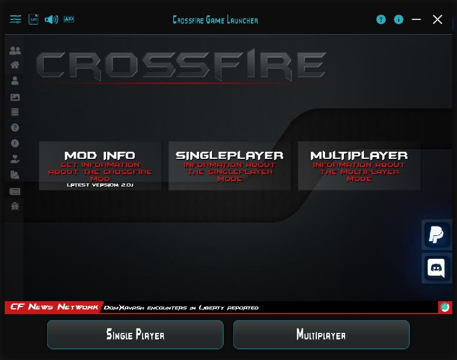

Features
Your launcher, explained.
Explore each feature, from launching the game and managing accounts to settings and diagnostics.

Launching & updates
Understand what the launcher updates before you play.
Explore this featureManage accounts
Add, edit, transfer and back up profiles.
Explore this featureAdjust settings
Graphics, interface, music and diagnostics in one place.
Explore this featureConnection & offline mode
Check your connection and try reconnecting.
Explore this featureRead & save logs
Find errors, filter entries and save diagnostic information.
Explore this featureCollect crash dumps
Optional diagnostic data for unexpected game crashes.
Explore this featureCreate a support package
One ZIP containing diagnostic information for your bug report.
Explore this featureCommand line
Launch Single Player and Multiplayer directly and understand the available arguments.
Explore this feature